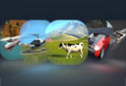
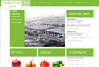
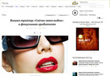
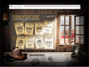
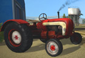

Новости

Релиз новой версии Blend4Web
23 апреля 2014 г.Увидел свет второй публичный выпуск открытого 3D web фреймворка Blend4Web. Фреймворк предназначен для создания трехмерного интерактивного контента, работающего в браузерах без использования плагинов. Blend4Web тесно интегрирован с открытым пакетом Blender, использующимся в качестве основного инструмента редактирования 3D сцен. Воспроизведение контента осуществляется средствами WebGL, Web Audio и других браузерных технологий.

Госдума приняла закон о правах и обязанностях популярных блогеров
22 апреля 2014 г.Госдума приняла закон, который вводит новые правила для популярных блогеров и обязывает соцсети, поисковики и форумы полгода хранить информацию, оставленную пользователями. Депутаты настаивают, что речь не идет о приравнивании блогеров к СМИ. Документ, разработанный группой депутатов от всех фракций, входит в так называемый антитеррористический пакет, внесенный "по следам" взрывов в Волгограде в конце прошлого года. В ходе работы над текстом в нем появилось понятие "блогер" - владелец сайта с посещаемостью более 3 тыс. пользователей в сутки.

Первый релиз открытого движка Blend4Web
06 апреля 2014 г.Компанией «Триумф» представлен выпуск новой платформы для разработки трёхмерных браузерных приложений Blend4Web. Движок использует технологию WebGL для рендеринга, имеется встроенная поддержка звука и физики. Для создания исходных сцен используется пакет 3D-моделирования Blender, для которого подготовлен соответствующий плагин. Особенностями движка являются удобство использования, мощные инструменты для продвинутых разработчиков и высокая производительность.

WebGL движок «Blend4Web»
13 декабря 2014 г.WebGL движок «Blend4Web» для создания 3D визуализации различных объектов, интерактивных игр, презентаций, интернет-магазинов и других web-приложений. «Blend4Web» проинтегрирована с пакетом 3D моделирования и анимации «Blender», отображение контента осуществляется при помощи программной библиотеки WebGL.

Площадка электронной торговли
13 декабря 2014 г.Площадка электронной торговли – «облачный сервис» для соединения преимуществ традиционной (реальной) торговли с популярностью виртуальных продаж, в котором уже решены такие сложные, информационные и технологические задачи, как организация и размещение в интернете виртуального торгового центра.

Социальная сеть для производителей и потребителей
13 декабря 2014 г.Социальная сеть для производителей и потребителей предназначена для построения и организации в интернете социальных взаимоотношений между производителями, продавцами и конечными потребителями (покупателями) всевозможных товаров и услуг, с помощью таких интерактивных инструментов, как видео и текстовой чат, комментарии, рейтинги, приложений «вопрос-ответ», «мнения экспертов» и т.д.

Журнальная платформа
13 декабря 2014 г.Журнальная платформа для создания интерактивных журналов различной тематики и просмотра их на мобильных телефонах, планшетах и домашних компьютерах. С помощью удобного интерфейса пользователь может создавать собственные журнальные страницы, наполнять их разнообразным контентом – текстами, музыкой, фильмами, фотографиями, графикой и элементами 3D анимации.

Универсальная игровая платформа
13 декабря 2014 г.Универсальная игровая платформа, предназначенная для написания двухмерных и трехмерных сетевых компьютерных игр, которые, в дальнейшем, могут размещаться в интерактивных журналах. Программа позволяет разработчикам браузерных игр формировать игровую логику и систему взаимодействия между игроками.
Wantbook © 2014